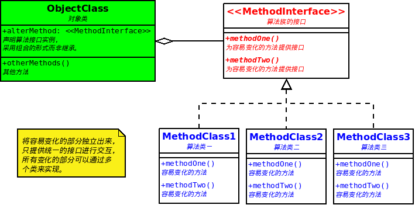

策略模式(Strategy Pattern)
策略模式定义了算法族，并将他们分别封装起来，让他们之间可以互相转换，此模式让算法的变化独立于使用算法的客户。

OO基础
- 抽象
- 封装
- 多态
- 继承
OO原则
- 将变化的部分独立出来并进行封装。
- 针对接口编程，而不是实现编程。
- 多用组合，少用继承。
适用性
- 许多相关的类仅仅是行为有异。“策略”提供了一种用多个行为中的一个行为来配置一个类的方法。
- 需要使用一个算法的不同变体。例如，你可能会定义一些反映不同的空间/时间权衡的算法。当这些变体实现为一个算法的类层次时,可以使用策略模式。
- 算法使用客户不应该知道的数据。可使用策略模式以避免暴露复杂的、与算法相关的数据结构。
- 一个类定义了多种行为, 并且这些行为在这个类的操作中以多个条件语句的形式出现。将相关的条件分支移入它们各自的Strategy类中以代替这些条件语句。